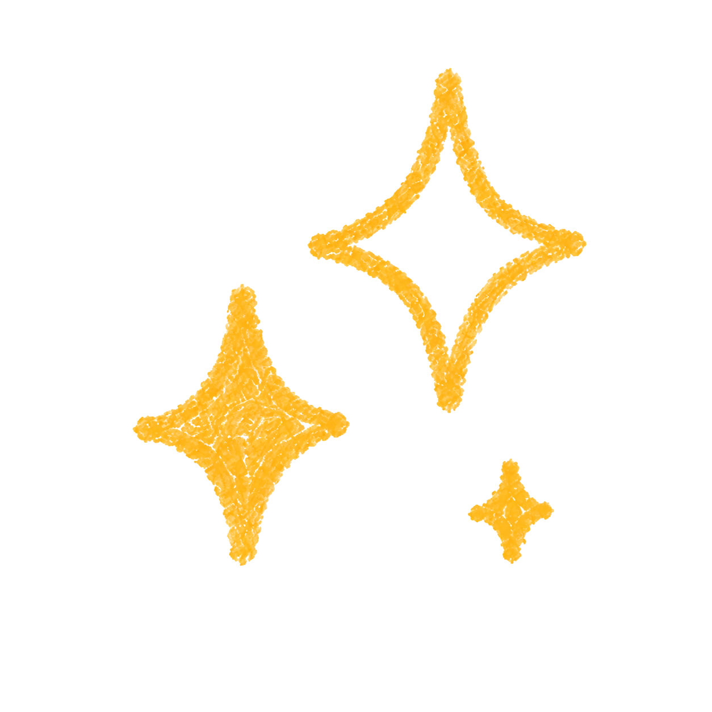

FlowPortal: Residual-Corrected Flow for Training-Free Video Relighting and Background Replacement
Training-free video relighting and background replacement with an emphasis on temporal consistency, structure preservation, and detail transfer.

I am Jiangyue Zeng , an undergraduate student in the AI direction of Yuanpei College at Peking University, with research interests primarily in Generative AI, AI for Art, and image/video generation.
Currently a research intern at STRUCT (Spatial and Temporal Restoration, Understanding and Compression Team), Wangxuan Institute of Computer Technology, Peking University, advised by Shuai Yang.
Training-free video relighting and background replacement with an emphasis on temporal consistency, structure preservation, and detail transfer.
A training-free framework for controllable image generation with layout guidance.
Spatial and Temporal Restoration, Understanding and Compression Team (STRUCT), Wangxuan Institute of Computer Technology, Peking University, advised by Shuai Yang.
Beijing, China
Undergraduate student, Yuanpei College / Artificial Intelligence direction.
Beijing, China
Secondary school education in Tianjin.
Animation, comics, and games are part of my long-term interests.
I enjoy J-Pop, Vocaloid music, and rhythm games such as maimai DX.
I am open to research conversations and collaborations around Generative AI and AIGC,etc!